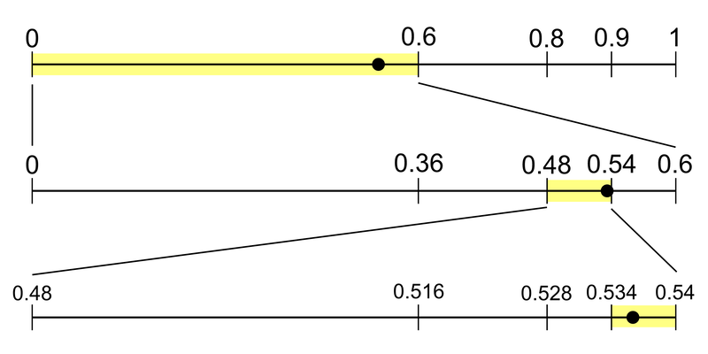
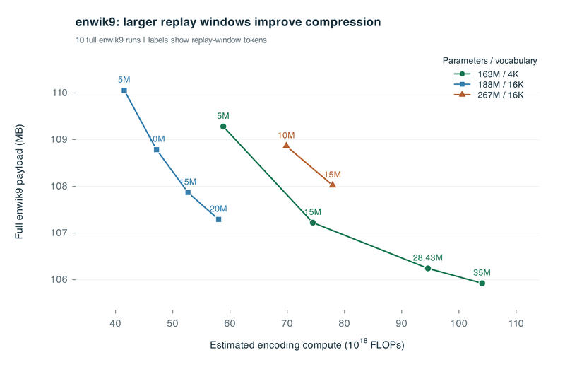
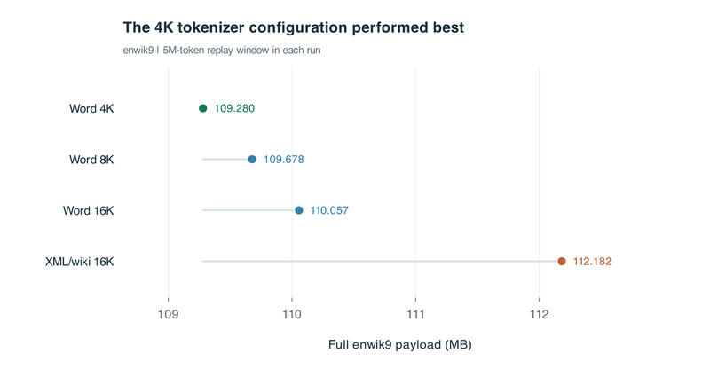

Feature 06 · ARTICLE · 2026 10
tufazip: Learning to Compress a Billion Bytes of Wikipedia
I took #2 on the Large Text Compression Benchmark (at the time of submission: Sept. 7, 2026) with tufazip, the best-performing entry using a neural network as its sole prediction model. It compressed one billion bytes of Wikipedia into 105,388,353 bytes (105.39 MB), including the offline trained weights and decoder. The predictor is a 12-layer, 163M-parameter Transformer, initialized from a 34M-parameter offline model quantized to 4.33 MB. Two offline trained layers are copied into twelve independent layers, which keep learning as the file is compressed. The decoder repeats the same learning, so the full model’s learned weights never need to be transferred.
Why compress
Matt Mahoney argues for understanding intelligence through compression: capturing the structure in observations so they can be described more compactly. For text, the link is direct. If a model assigns probability $p$ to the next token, its ideal encoding cost is $-\log_2 p$ bits. For a fixed tokenization, next-token prediction and compression have the same objective: the summed cross-entropy loss in bits is exactly the ideal compressed length. Compression on one file is a limited measure of intelligence, but it gives us a concrete way to study how well a model captures structure.
The benchmark file is enwik9; I used enwik8, its first 100 million bytes, to compare configurations. The score includes the compressed text plus the zipped decoder and anything needed for decoding. Better predictions must save more space than an offline model adds.
For decades, compressors moved from repeated strings (gzip) to statistical prediction (PPM), context mixing (PAQ), LSTMs (cmix, NNCP), and Transformers with replay (NNCP v2). By 2023, NNCP v3.2 reached 107.26 MB. As an AI researcher, I wanted to see how far a simple Transformer could go as the sole predictor. Starting from NNCP, I improved the model and training recipe.
How it works

The text is converted reversibly into tokens. The Transformer assigns probabilities to the next token, and an arithmetic coder turns them into bits: it starts with the interval from zero to one, splits it in proportion to the probabilities, and keeps the piece for the actual token. Probable tokens leave wider intervals and cost fewer bits. The final compressed artifact is a number between zero and one.
Encoder and decoder start from identical weights and repeat the same loop:
Predict: both produce the same next-token probabilities from the text they already know.
Encode or decode: the encoder writes the actual token; the decoder recovers it.
Learn: both perform the same training update.
The decoder reconstructs the model’s training as it reconstructs the text. Weight updates and probabilities must be fully deterministic for this to be lossless.
What helped


Replay, periodically retraining on a window of already-decoded text, consistently helped at a large computation cost. With the same 163M model and 4K vocabulary, widening the window from 15M to 35M tokens cut the enwik9 payload from 107.22 to 105.92 MB: 1.30 MB, or 1.21%, for about 40% more estimated model FLOPs.
Smaller vocabularies consistently helped. With 5M-token replay, the 4K word tokenizer beat 8K and 16K. Surprisingly, dedicated XML/wiki tokens made compression worse. Changing tokenization also changes how much source text fits into a fixed number of context or replay tokens.
More parameters did not help in the matched enwik9 comparisons: at a fixed 16K vocabulary, 267M produced slightly larger payloads than 188M. On enwik8, gains ran from 14M to 77M, changed little at 163M, and worsened at 336M. We hypothesize that for a fixed document there is an optimal model size.
The best online run (163M parameters, 4K vocabulary, 192-token context, 35M-token replay, 0.25 replay dropout) reached 105.92 MB of payload, or 105.98 MB including the decoder (0.848 bits per byte).
Can an offline prior pay for itself?
Every approach faces the same target:
transferred model + compressed text and decoder < online baseline.
Each extra megabyte spent on weights removes one megabyte from the remaining budget. We tried full-precision models, dense low-bit models, LoRA, quantized LoRA, and compact architectures that store few blocks and expand them to twelve layers online.
On enwik8, nothing won. The best quantized LoRA (32M) had an estimated total of 20.88 MB; the compact two- and three-block priors reached 17.58 and 18.96 MB. All exceeded the 15.15 MB online baseline.
enwik9 gives a fixed-size prior ten times as much data to recover its cost. There, Cycle2 (C2) crossed the boundary. It trains two shared blocks repeated across twelve steps, stores each once, then copies them into twelve independent layers that specialize online.
| Configuration | Payload MB | Decoder + weights MB | Total MB |
|---|---|---|---|
| Online v1 | 105.924 | 0.055 | 105.979 |
| L6 | 99.173 | 10.945 | 110.118 |
| C2 | 100.958 | 4.430 | 105.388 |
The six-layer prior (L6) produced the smaller payload, but its weights erased the savings. C2 saved 4.97 MB of payload while adding 4.38 MB of decoder cost: a net 0.59 MB, or 0.56%, over online v1.
Discussion
I still find this benchmark valuable in the era of automated research loops. Under the compression perspective, a smaller complete artifact is evidence of a more intelligent representation of the same corpus, even if it does not by itself establish greater general intelligence. Counting the decoder and weights makes that meaningful.
cmix version 21 combines 2,077 predictors. Putting knowledge into hardcoded code is a legitimate way to represent it, but the score alone does not reveal how much was learned from the input, supplied by a human designer, or discovered by a research agent. My interest in a single neural predictor is partly in how much structure a general learning procedure can recover.
The Goodhart risk appears when compression of one fixed file stands in for intelligence more broadly. Hill climbing a single objective can improve a score without explaining why a change worked. Terence Tao raises a similar concern about AI-generated proofs: progress also requires people to understand and build on the ideas.
Our six-layer prior predicted better than Cycle2 but produced a larger artifact. That suggests a question: how much predictive quality can a smaller representation retain? I would want an automated loop to investigate such questions and explain which findings carry over, rather than to make the payload smaller by $\varepsilon$ bytes.